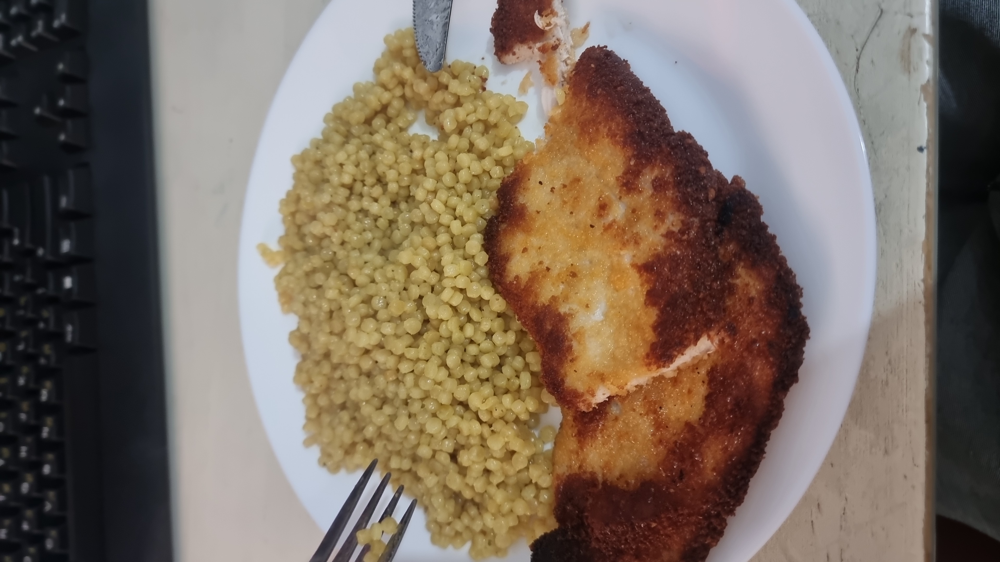

פתיתים
זמן הכנה: 15 דקות

רשימת מצרכים:
- 2 כוסות פתיתים
- 1 טבלית תיבולית הודית של קנור
- 2 כפות שמן זית
- מלח פלפל
תהליך הכנה:
- שמים את כל המרכיבים בסיר ומטגנים 2 דקות
- מוסיפים מים רותחים (הרתחה בקומקום) עד שיכסו את גובה הפתיתים
- מערבבים עד שהתיבולית נמסה, מנמיכים לאש נמוכה וסוגרים את הסיר ל-10 דקות
- אם המים לא מתאדים להגביר את האש ולהוריד את המכסה